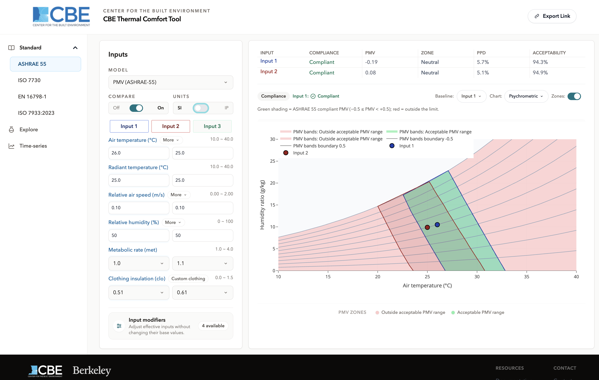
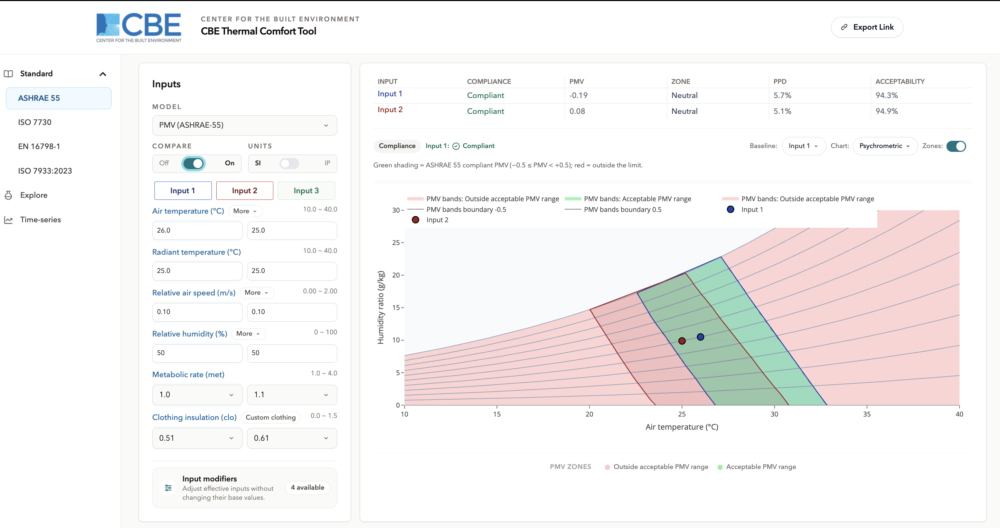

Compare mode
Overview
Compare mode evaluates up to three sets of inputs at the same time, so you can put two design options, two clothing assumptions or two work rates beside each other instead of changing one number and trying to remember what the previous answer was.
It is a toggle in the input panel, available on all four standard workspaces and in Explore. In the previous version of this tool, comparison was a separate place you navigated to; it is now a mode that any workspace can be put into.

Primary interface components
The three input sets
The sets are named Input 1, Input 2 and Input 3, and each carries its own colour, used consistently in the input panel, the result table and on the chart so a point is always attributable.
Input 1 is the base case and is always present it cannot be hidden. Inputs 2 and 3 appear when compare is switched on and can each be shown or hidden individually, so a two-way comparison is as easy as a three-way one.
Each set starts from slightly different defaults rather than three identical copies, so the comparison is meaningful the moment you turn it on and you can see at a glance which column is which.
Per-input visibility
Hiding an input removes it from the result table and the chart but keeps its values, so you can bring it back without retyping. Hiding the set you are currently editing moves the focus to the next visible one.
The chart baseline picker
Charts that draw a zone or a field can only draw one at a time a comfort zone depends on clothing, metabolic rate and air speed, so three input sets imply three different zones. The baseline picker above the chart chooses which set the drawn region belongs to.
All visible input points are plotted regardless. Only the zone or field follows the baseline.

Results with compare on
The result table gains a column per visible input set, with the same outputs and the same compliance verdict logic applied to each independently. One set can pass while another is out of range; each is judged on its own inputs.
Working with compare mode
Turning it off
Switching compare off returns to Input 1 alone. The values in the other sets are kept for the session, so turning it back on restores them.
What is shared and what is not
The unit system, the selected model and the chart settings are properties of the workspace, not of an individual input set all three sets are evaluated in the same units with the same model. Everything in the input fields, including the input modifiers, belongs to the individual set, so Input 1 can have solar gain enabled while Input 2 does not.
Compare and sharing
A share link carries the whole comparison: which sets are visible, their values, the active set and the chart baseline. A recipient opens the same three-way comparison you built. See Sharing a calculation.
Availability
| Workspace | Compare |
|---|---|
| ASHRAE 55, ISO 7730, EN 16798-1, ISO 7933:2023 | Available |
| Explore | Available |
| Time-series | Not available a scenario is a sequence of segments rather than a single input set |
Where to go next
- Charts and chart controls the baseline picker in the context of the other chart controls.
- Main interface where the compare toggle sits.